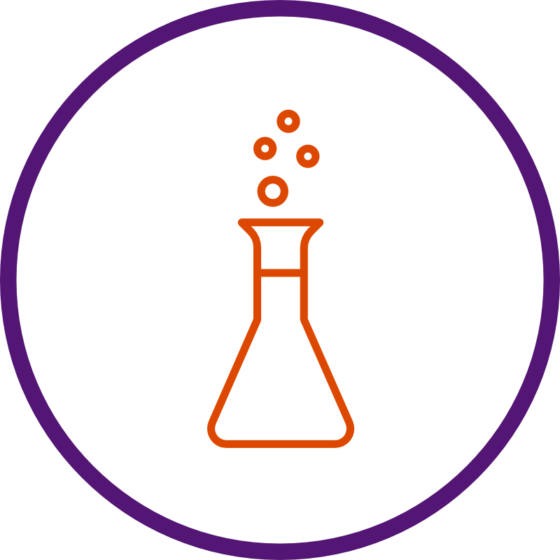
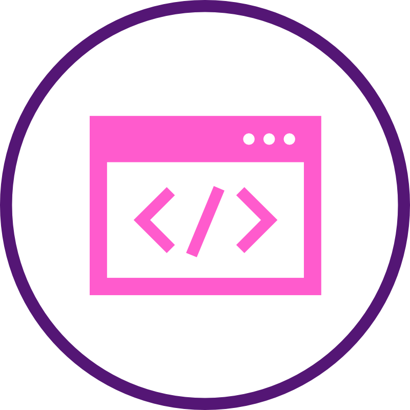
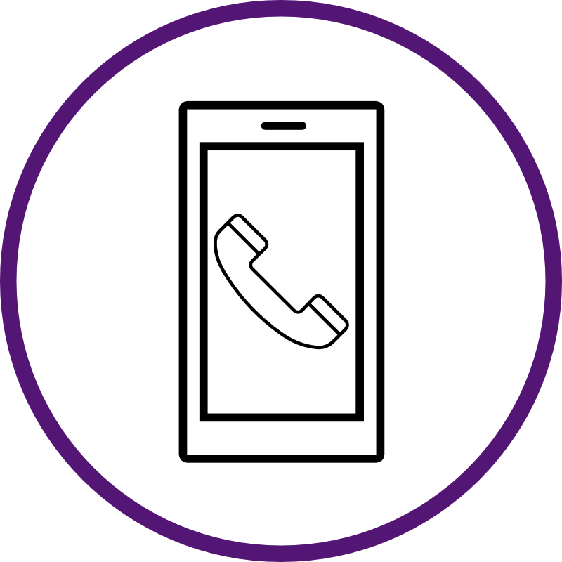

TEACHINGS
"Simplicity is prerequisite for reliability." - Edsger W. Dijkstra
CSE435: Software Engineering
6 semesters
CSE435 teaches students the importance of software engineering. For many students, this course is the first to address / discuss safety-critical systems and the dangers of poor software. We discuss the large number of stakeholders in software engineering. We teach software process models such as waterfall, V-model, Spiral model, Agile, etc., with emphasis on verification and validation of the software product. Furthermore, we teach a number of diagram notations (e.g., class models, sequence diagrams, state diagrams, use-case diagrams, etc.) from the Uniform Modelling Language. During each semester, students are given a real-world safety-critical project from industry, ranging from adaptive cruise control systems, hands free driving systems, lane management systems, etc. They develop a Software Requirements Specification (SRS) document and design / implement a prototype for our industrial partners!
Tutoring
2015-Present

I have been tutoring a number of students since 2015 tutoring a wide range of STEM related subjects. They include, but are not limited to Calculus, statistics, Linear Algebra, data, Machine Learning, Software Engineering, Chemistry, etc.
CSE477: Web Development
2 semesters

CSE477 teaches students Web Development. We teach students the basics of web development, including html, css, javascript. In the latter half of the semester, we introduce frameworks such as Vue, Flask, Jinja. Some important design patterns we teach include Model View Controller (MVC), data access patterns, proper database management, and password encryptions.
CSE476: Mobile Application Development
1 semesters

CSE476 teaches students Mobile Application Development. Specifically, CSE476 taught mobile application development using the Android platform. We introduce unique requirements and methodologies for developing client-server applications for smartphones, tablets, and other mobile devices. For many students, this is the first hands-on experience they get with developing a full fledged application!
CSE260: Discrete Structures
2 semesters
CSE260 teaches students discrete mathematics, propositional and first order logic, equivalence and methods of proofs. We also teach basic set theories, relations, functions, and discrete probabilities.
CSE335: Object-oriented Design
1 semesters

CSE335 teaches students the importance of Object-oriented Programming. This class was taught using C++. Students first design their class structure using a Class Diagram from the UML language. They learn about the importance of reliability, reusability, maintainability, and ease of extension. They then implement their respective projects using object orientation.